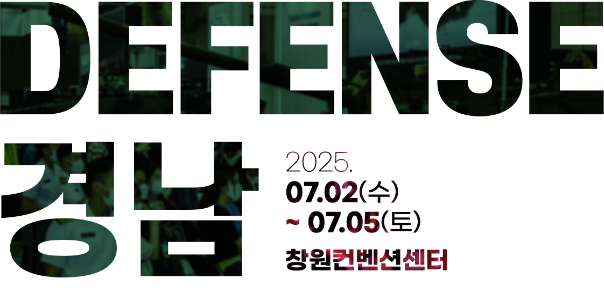

K-방산의 중심, 경남 창원에서 첨단방위산업 발전을 위한 2025 경남창원 방위산업전(DEFENSE-경남)이 열립니다.
| ㆍ전시회명 | : | 2025 경남창원 방위산업전 [2025 DEFENSE-경남](가칭) |
|---|---|---|
| ㆍ전시기간 | : | 2025.07.02(수) ~ 2025.07.05(토) |
| ㆍ전시장소 | : | 창원컨벤션센터 1,2,3 전시장, 야외광장 |
| ㆍ전시규모 | : | 100개사 450부스 |
| ㆍ주최/주관 | : | 경상남도, 창원특례시 / 제이엠컴퍼니, 경남관광재단 |
|---|---|---|
| ㆍ후원 | : |
과학기술정보통신부, 외교부, 대한민국 국방부, 산업통상자원부, 중소벤처기업부 대한민국 육군·해군·공군, 해병대, 방위산업청, 국가보훈부, 국방과학연구소, 국방기술품질원, 국방기술진흥연구소, 한국방위산업진흥회, 경남테크노파크 등(예정) |
| 1 | 1 |
| 글로벌전시회 | 국내외 100개사 450부스 규모의 비지니스 방산산업 전시회 |
|---|---|
| 수출상담회 | 바이어 매칭 프로그램 운영을 통한 효율적인 수출 상담 지원 |
| 바이어 투어 | 경남에 밀집되어 있는 방산기업에 해외 바이어가 직접 방문할 수 있는 투어 운영 |
| 방산 강소기업 특별 홍보관 | 방산 관련 우수중소강소기업 육성 및 중소벤처기업 지원을 위한 특별 홍보관 구성 |
| 세미나 | 참가기업 신기술 및 신제품 발표회, 세미나 개최 |
| K-방산 혁신포럼 | 방산 분야 성장을 위한 기술 발표 혁신 포럼 개최 |
| 학술대회 |
2025 국방품질 종합학술대회 동시 개최
- 국방기술품질원에서 주최하는 학술대회를 행사 기간 동안 동시 개최 |